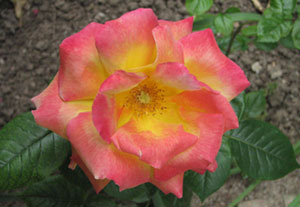

Featured Spring Plant: Roses!
Who can resist the romance of roses? Poets have waxed poetically over them throughout the years. Many persons consider the beauty and fragrance of roses to be unmatched in nature. The varieties are endless, ranging from floribunda to hybrid teas to shrub roses to climbing roses. Each variety has its own personality and preference in the garden setting. Pictured on the left is a Summer Breeze Hybrid Tea bud. This variety is fast growing and produces spectacular blooms that are beautiful as cut flowers in arrangements. The enchanting fragrance will fill your home with summer sweetness. They require full sun. Hybrid teas need regular spraying and pruning, but will reward you with classic blooms that will be a focal point in your landscaping and provide you with beautiful arrangements in your home. They are well worth the effort!
For ease of growing, Knock Out® roses are some of our all-time favorites. Even beginners will not fail with these garden delights. They are shrub roses and prefer full sun, but can take partial shade. They are disease resistant and drought tolerant. You do not have to be concerned with either black spot or dead-heading with roses such as the Knock out®, making them an extremely low-maintenance plant. They are also repeat bloomers, blooming into late fall. The shrub can grow quite large, but can be pruned to any size. The one you see on the right is Southern Belle. Check out all our varieties as you will not fail to have great color with these plants.
 The Candy Cane Floribunda shown on the left is a beautiful rose with cream, pink, and red stripes and swirls. They have a heavy scent that will remind you of the roses you received on your most special occasions. These blooms are approximately four inches in diameter. They bloom continuously from early summer to early fall. The plants grow up to four feet tall and three feet wide. They are shipped bare root in February. You must see a close-up of these beauties! Click the image on the left to enlarge them.
The Candy Cane Floribunda shown on the left is a beautiful rose with cream, pink, and red stripes and swirls. They have a heavy scent that will remind you of the roses you received on your most special occasions. These blooms are approximately four inches in diameter. They bloom continuously from early summer to early fall. The plants grow up to four feet tall and three feet wide. They are shipped bare root in February. You must see a close-up of these beauties! Click the image on the left to enlarge them.
In addition to these marvelous roses, we have many annuals, perennials, and water plants that have just arrived.
 The Candy Cane Floribunda shown on the left is a beautiful rose with cream, pink, and red stripes and swirls. They have a heavy scent that will remind you of the roses you received on your most special occasions. These blooms are approximately four inches in diameter. They bloom continuously from early summer to early fall. The plants grow up to four feet tall and three feet wide. They are shipped bare root in February. You must see a close-up of these beauties! Click the image on the left to enlarge them.
The Candy Cane Floribunda shown on the left is a beautiful rose with cream, pink, and red stripes and swirls. They have a heavy scent that will remind you of the roses you received on your most special occasions. These blooms are approximately four inches in diameter. They bloom continuously from early summer to early fall. The plants grow up to four feet tall and three feet wide. They are shipped bare root in February. You must see a close-up of these beauties! Click the image on the left to enlarge them.